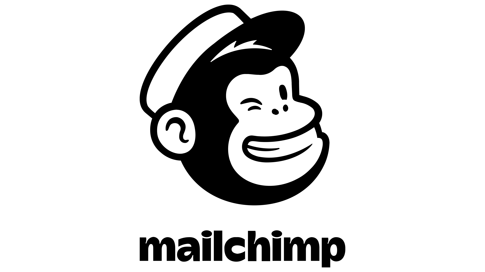
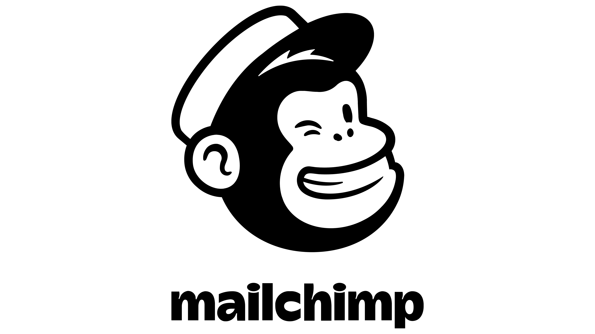

BlocParty: Group Restaurant Reservation Website
Restaurant Reservation Platform built on Bubble.io for a class project.


Background
The purpose of this project was to utilize the course's labs on front end and back end fundamentals, cloud fundamentals, end to end web services etc. to create a website and application.
My team was inspired by a continuous problem that our MBA class has with finding venues to host our large group for dinner or drinks in Manhattan.
We were not satisfied with current solutions: booking online for over 8 people is almost never a possibility, and contacting event managers for larger groups takes a long time, a lot of effort communicating back and forth and often a large booking fee. We saw a gap in the market and based our project around the value proposition of enabling large groups to make online reservations with establishments that have the space to host them.
Getting Started
Refining the Concept
The first thing we did was refine our concept. We settled on a name, and created user stories to define what the user experience should look and feel like from the client's perspective and from the establishment's. We outlined what the flows (registration, search, reservation, etc) would look like. We were able to divide the work into smaller chunks that could be executed by a single person so that we could each work somewhat* independently.
*"somewhat" only because the data tables set up on the backend would without a doubt be utilized across flows, so we knew there would be a lot of teamwork/mob time around this.
Identifying our Tech Stack
We were aware that creating a website with a good look and feel would be very hard for us (as a team with no design experience). For this reason, we immediately looked for low code platforms where drag and drop functionalities would enable us to use pre-created elements in order to build our website.
After looking at a few options, we landed on using bubble.io because it provided us with integration capabilities, ability to use our own domain name, and sufficient backend data table functionality for our process flows to be implemented. If time allowed, we knew that integration with Mailchimp and Stripe may be useful and bubble.io provided us with these capabilities as well.
 

Developing the Site
We started with the landing page, followed by the signup and login flow for customers. Here, we learned to implement states to determine which popups should show (login or signup) and learned to write to our first table: customer information.
Next, we developed a similar workflow for establishments, taking into account the verification that would have to occur during restaurant "signup".
After this, we started building out the reservation request workflow. This gave way to a lot of great discussion on what we wanted to focus on for our MVP versus what we would have ultimately wanted to achieve had we had more time. We knew we didn't have enough time for a payments integration with Stripe in order to accept deposit payments, so for our MVP we focused on enabling communication of "bids" (i.e. deposits and agreed-upon minimum price per person) through the request and request acceptance workflow. We were easily able to send emails using Bubble when specific actions were undertaken (i.e. emailing restaurants within specific categories chosen by users) without a mailchimp integration.
Finally, we worked to develop profiles for users and establishments. We created edit states that would allow users to edit their personal and bank information, which then wrote back into the appropriate table.
At this point, we had an MVP. We were ready to begin doing some basic testing. Testing revealed a couple of database issues which caused us to restructure our databases around one key customer identification: customer email. Once we'd done this, everything we'd built worked well. Data wrote into the proper tables and could be pulled by the correct fields.
Project Takeaways
Our first takeaway from this project was the extreme necessity to find a common identifier within tables so that these tables can be linked to one another and the right information can be pulled.
Our second takeaway was that even though creating two sided markets is economically profitable (which was the idea behind this project), it is very difficult. It ideally requires two different interfaces (one for each user type, in our case: customers and establishments). Having them on the same UI makes it difficult to show different logins and views to both user types and requires a lot of work with "states" etc. This would be important to think more about in the future.
Our second takeaway is that we wish we had created ERP diagrams for our tables from the start in order to better think about how to structure our data in a way that would make it easy to use.